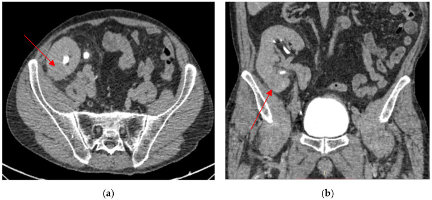
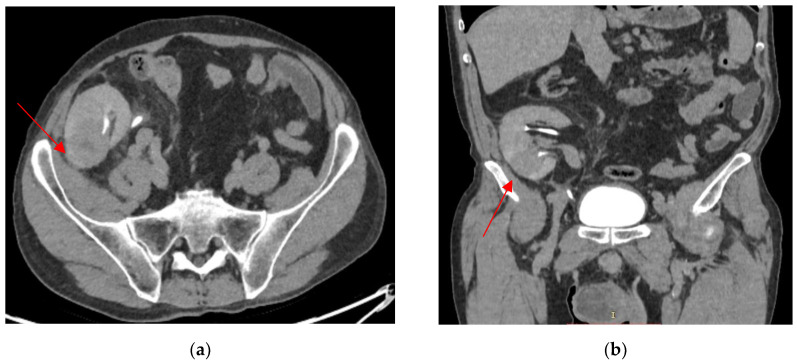
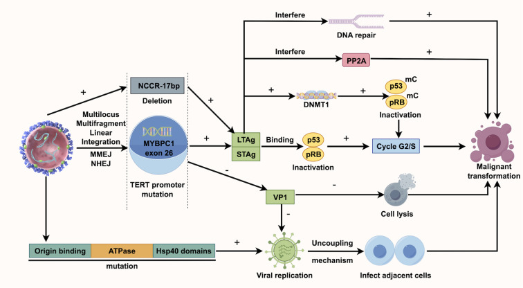

1750 — UTUC ở bệnh nhân thận ghép: khuyết lòng bể thận ghép & kẻ bắt chước "viêm thận–bể thận" / Upper tract urothelial carcinoma in kidney transplant recipients
Tags: pattern:khuyet-long pattern:u-nieu-mac pattern:gia-viem pattern:u-nuoc-than vung:than-ghep vung:nieu-quan vung:bang-quang vung:tieu-khung score:TNM-UTUC score:EAU-risk protocol:CT-urography protocol:MR-urography protocol:noi-soi-nieu-quan incidentaloma:than-ghep
Mức chắc chắn (certainty): tổng hợp y văn (literature synthesis) — 1 đoàn hệ quốc gia Hà Lan 30 ca/24.270 lần ghép (PMC12206317), 1 đoàn hệ 30 năm 97 ca UTUC sau ghép (PMC10148563), 1 đoàn hệ 24 ca UTUC có/không BK virus (PMC13093527), 1 tổng quan kể chuyện (PMC12740875) và 1 ca nguyên văn có ảnh (PMC12109492). Bằng chứng chủ yếu là hồi cứu và ca báo cáo; câu nào là suy luận được ghi [suy luận].
1. Tổng quan bệnh học – cơ chế hình ảnh
- Định nghĩa: UTUC (upper tract urothelial carcinoma) là ung thư biểu mô niệu mạc của bể thận – niệu quản. Ở người ghép thận, u có thể nằm ở thận ghép (bể thận ghép, niệu quản ghép nối vào bàng quang) hoặc ở thận nguyên bản (native kidney) — thường đã mất chức năng, ứ nước, đôi khi có bệnh thận nang mắc phải (ACKD).
- Vì sao nguy cơ tăng — 4 cơ chế chồng lên nhau:
- Giảm giám sát miễn dịch: thuốc ức chế miễn dịch làm tế bào u thoát khỏi tiêu diệt; nguy cơ ung thư chung sau ghép gấp 2–3 lần dân số chung.
- Độc chất trực tiếp lên DNA: thuốc ức chế calcineurin (CNI: cyclosporine, tacrolimus) và thuốc ức chế mTOR gây tổn thương DNA; acid aristolochic (aristolochic acid, AA) trong một số thuốc Nam/Trung tạo adduct DNA (dA-AL-I) — đây là lý do UTUC chiếm ưu thế ở người ghép Trung Quốc/Đài Loan.
- Virus sinh u: BK polyomavirus (BKPyV) tái hoạt động; kháng nguyên T lớn (large T antigen, LTag) gắn và bất hoạt p53, pRB → tế bào mất điểm kiểm soát chu kỳ. Ở một đoàn hệ Anh, BKPyV+ có 90,9% UTUC nguy cơ cao so với 30,8% ở BKPyV− (p = 0,005); SV40 LTag dương ở 33,3%, tất cả đều độ 3 (PMC13093527).
- Ứ nước – viêm mạn: nước tiểu ứ tạo môi trường độc và viêm; ứ nước thận nguyên bản là yếu tố dự báo độc lập mạnh nhất cho UTUC sau ghép với OR 35,32 (95% CI 17,99–69,36); 68,7% người có UTUC có ứ nước so với 4,8% người không có u (dẫn qua PMC12740875).
- Dịch tễ — con số cụ thể:
- Hà Lan, 1991–2023: 30 UTUC/24.270 lần ghép; tỉ lệ tích lũy 124/100.000 ca ghép (0,12%), tốc độ 3,7/100.000 người–năm — so với 3,3/100.000 ở dân số chung (RESR), tức chỉ cao hơn nhẹ ở Tây Âu (PMC12206317).
- Nhưng ở châu Á, mức tăng lớn hơn nhiều: một nghiên cứu châu Á dẫn trong tổng quan 2025 báo UTUC 129,5 lần và ung thư bàng quang 25,5 lần dân số chung; tại Trung Quốc UTUC/ung thư niệu mạc chiếm > 40% toàn bộ ung thư sau ghép (PMC12740875).
- 67% UTUC sau ghép nằm ở thận ghép; trung vị 91 tháng (IQR 62–115) sau ghép; 87% độ mô học cao; 47% đã pT3 lúc chẩn đoán (PMC12206317). UTUC trên thận ghép ước tính 0,019% người ghép (PMC12109492).
- Loạt 97 ca: 52,6% UTUC, 17,5% bàng quang, 29,9% cả hai; sống 5 năm UTUC ≤ T1 88,2%, UTUC + bàng quang ≤ T1 57,7%, UTUC ≥ T2 90,2%, UTUC + bàng quang ≥ T2 48,2% (PMC10148563).
- TẠI SAO hình ảnh trông như vậy (vật lý + mô bệnh):
- U niệu mạc là mô mềm 30–50 HU trước tiêm, ngấm thuốc +20–40 HU ở thì vỏ–tủy/ngấm thuốc, nên trên thì bài tiết (7–10 phút) nó hiện thành khuyết lòng (filling defect) được viền bởi nước tiểu cản quang dày — nguyên lý của dấu goblet/stipple (xem bài 1724).
- Ở thận ghép, niệu quản rất ngắn sau nối niệu quản–bàng quang; u ở đoạn nối hoặc bể thận ghép dễ bị bỏ sót nếu không chụp thì muộn qua hố chậu. Khi eGFR thấp, thận ghép bài tiết kém → không có cản quang trong bể thận, khuyết lòng "biến mất" dù u vẫn còn.
- U lành tính/viêm có thể giả viêm: phù nề niêm mạc, thâm nhiễm tế bào viêm và xơ → giảm ngấm, bờ mờ, không có khối đặc rõ, rất giống viêm thận–bể thận hoặc áp-xe. Ca nguyên văn dưới đây bị điều trị như "viêm thận ghép" gần 2 năm trước khi chẩn đoán (PMC12109492).
- Không có ngưỡng β-hCG/CRP nào loại trừ u. Cytology nước tiểu âm tính ở cả 3 lần trong ca nguyên văn — độ nhạy thấp, nhất là khi u ở trên cao và nước tiểu ít.
2. Mẫu hình + chẩn đoán phân biệt theo VỊ TRÍ (Gamut)
Mẫu hình: (a) khuyết lòng trong bể thận/niệu quản ghép ± ứ nước; (b) khối thay thế nhu mô thận ghép, bờ mờ, ngấm thuốc kém ("giả viêm"); (c) hẹp niệu quản đoạn dài ± ứ nước; (d) nhiều ổ ở đường niệu trên (field change) ± bàng quang.
- Theo vị trí:
- Bể thận ghép/thận ghép: UTUC thận ghép (0,019%), u tuyến thận sinh (renal cell carcinoma, RCC) thận ghép (đa số trong nhu mô, giàu mạch), viêm thận–bể thận/áp-xe thận ghép, bệnh BK (BK nephropathy) + hẹp niệu quản, nhồi máu ổ khuyết (segmental infarct), máu tụ/cục máu đông trong bể thận.
- Niệu quản ghép/đoạn nối: hẹp miệng nối do thiếu máu (bài 3011), hẹp do BK virus (lan tỏa, thành dày — cũng trong bài 3011), UTUC tại miệng nối, sỏi (bài 190), nấm/kén khí.
- Thận nguyên bản: UTUC trên thận mất chức năng + ứ nước (OR 35,32), RCC/ACKD, sỏi san hô, viêm xơ hóa, di căn (hiếm).
- Bàng quang: UTUC đồng thời/tái phát sau UTUC (field change) — phải nội soi bàng quang trong cùng đợt; 77,7% tái phát 5 năm sau TURBT ở người ghép so với 38% không ghép (PMC12740875).
- Theo hình thái (giúp nhớ nhanh):
- Khuyết lòng di động, đổi vị trí: cục máu đông, nấm, mảnh niêm mạc bong.
- Khuyết lòng cố định + ngấm thuốc: UTUC, u nhú niệu mạc, nephrogenic adenoma (lành, cũng cho dấu goblet — bài 1724).
- Khối đặc thay nhu mô, ngấm kém, bờ mờ: UTUC thể thâm nhiễm, giả viêm; RCC thường giàu mạch, ngấm mạnh thì vỏ.
- Hẹp đoạn dài, thành dày, không khối trong lòng: BK virus, hẹp do thiếu máu, xơ sau can thiệp.
- Tăng đậm độ > 200 HU, không ngấm: sỏi.
3. Bảng so sánh phân biệt (ma trận đối chiếu)
| Thực thể (entity) | Hình ảnh điển hình (CT/MRI) | Chốt vào (rule-in) | Chốt loại (rule-out) | Gợi ý xác nhận |
|---|---|---|---|---|
| UTUC thận ghép (bể thận/niệu quản) | Khuyết lòng cố định, ngấm thuốc, ± ứ nước; hoặc khối thay nhu mô bờ mờ, ngấm kém; ± hạch hố chậu | Khuyết lòng cố định + ngấm thuốc trên CT thì bài tiết; ứ nước thận ghép; tiền sử UTUC bàng quang | Không khuyết lòng, không ngấm, đổi vị trí → máu/nấm; có sỏi cản quang > 200 HU → sỏi | CTU 3 thì; nội soi niệu quản + sinh thiết; GATA3/p63 |
| Viêm thận–bể thận/áp-xe thận ghép | Thận to, phù quanh, ổ dịch/khí trong nhu mô, ngấm viền; giảm ngấm hình nêm | Sốt + đau hố chậu + CRP tăng + cấy nước tiểu (+), ổ dịch/khí | Không có ổ dịch/khí, khối đặc ngấm thuốc tồn tại sau 4–6 tuần kháng sinh → không phải viêm đơn thuần | Siêu âm/CT lặp sau kháng sinh; chọc hút nếu có ổ |
| Bệnh BK (BK nephropathy) + hẹp niệu quản | Hẹp đoạn dài/lan tỏa, thành niệu quản dày, thận ghép phù; không khối trong lòng | BK viral load (+), hẹp không có khối, đáp ứng giảm ức chế miễn dịch | Khối đặc trong lòng hoặc khuyết lòng cố định → nghĩ UTUC | PCR BK; SV40; nội soi thấy hẹp không u |
| Cục máu đông/nấm trong bể thận | Khuyết lòng di động, không ngấm, thay đổi giữa 2 lần chụp | Đổi vị trí/tan sau rửa, không ngấm | Cố định + ngấm sau tiêm → u | Chụp lặp 24–48 giờ; rửa bể thận |
| Sỏi thận ghép | > 200 HU (calci), không ngấm; ± bóng cản quang | Tăng đậm độ rất cao, không ngấm, ± sỏi san hô | Không thấy cấu trúc cản quang; khuyết lòng mềm → u | CT không cản quang; X-quang; siêu âm |
| RCC thận ghép | Khối trong nhu mô, giàu mạch, ngấm mạnh thì vỏ–tủy, ± hoại tử | Ngấm mạnh thì động mạch + washout, không xuất phát từ bể thận | Tổn thương trung tâm bể thận, ngấm kém → UTUC | CT 4 thì; MRI; sinh thiết |
| Phản ứng hạt BCG (sau bơm bàng quang) | Thành bàng quang/niệu quản dày, hẹp, ổ hạt nhỏ, không khối lớn | Tiền sử BCG + cấy nước tiểu vô khuẩn + tổn thương lan tỏa đối xứng | Khối đặc khu trú, lớn dần → không phải phản ứng BCG | Ngừng BCG, chụp lặp; sinh thiết nếu nghi |
| Nephrogenic adenoma (lành) | Khuyết lòng nhỏ, giống UTUC, có thể dấu goblet | Tiền sử can thiệp niệu quản + tổn thương nhỏ, không xâm lấn | Xâm lấn cơ/xơ hóa quanh, hạch → UTUC | Sinh thiết (chẩn đoán mô học) |

CT thận ghép (a: trục, b: coronal): tổn thương 29/26 mm ở cực dưới thận ghép, giảm đậm độ, bờ mờ — hình ảnh "giả viêm" của UTUC thận ghép. Nguồn: Moldoveanu O et al., Biomedicines 2025 (PMC12109492), Fig. 2, CC BY 4.0.Ba câu hỏi trước khi gọi "viêm thận ghép"
- Tổn thương có nằm trong lòng đường niệu không? (khuyết lòng cố định = u; ổ dịch trong nhu mô = viêm/áp-xe).
- Sau 4–6 tuần kháng sinh đúng, tổn thương có nhỏ lại không? Không nhỏ, hoặc to lên, phải loại trừ u — ca nguyên văn tăng từ 29/26 mm lên 41/38 mm (PMC12109492).
- Có ứ nước thận ghép/thận nguyên bản không? Ứ nước là OR 35,32 cho UTUC — không được coi là "biến chứng ghép" đơn thuần.
4. Protocol chụp + phân độ/điểm chuẩn hóa
- Siêu âm: bước đầu, đo bề dày nhu mô, bể thận, độ giãn đài bể thận; siêu âm hằng năm để phát hiện ứ nước thận nguyên bản (dấu hiệu cảnh báo mạnh nhất) và bất thường thận ghép.
- CT urography (CTU) 3 thì — chuẩn chẩn đoán:
- Không cản quang: phát hiện sỏi > 200 HU, vôi hóa, nang.
- Thì vỏ–tủy 30–40 giây (hoặc 60–70 giây): đánh giá nhu mô thận ghép, khối đặc, hạch.
- Thì bài tiết 7–10 phút: bắt buộc để thấy khuyết lòng trong bể thận/niệu quản ghép; lát ≤ 1 mm, MPR coronal/sagittal qua hố chậu.
- Với thận ghép: đặt cửa sổ qua hố chậu, không chỉ qua thận nguyên bản; không bỏ thì muộn vì niệu quản ghép rất ngắn.
- Hiệu năng chung của CTU cho UTUC: Se ~92%, Sp ~95%, nhưng u < 3 mm chỉ Se ~40% (bài 1724).
- Khi eGFR < 30 mL/min/1,73 m² (thận ghép thường suy):
- MR urography (MRU) chuỗi T2 (không cần gadolinium) + T1/T2 + DWI; gadolinium tránh khi eGFR < 30 vì nguy cơ xơ hóa hệ thống do gadolinium (NSF).
- Chụp ngược dòng/qua da (retrograde/antegrade pyelography) nếu cần, nhưng tránh đặt nephrostomy xuyên qua u (nguy cơ gieo mầm đường hầm) [suy luận].
- Siêu âm + CT không cản quang vẫn có giá trị theo dõi ứ nước và sỏi.
- Phân độ TNM (AJCC 8th) — UTUC:
- Ta: u nhú không xâm lấn; T1: xâm lấn lớp đệm (lamina propria); T2: xâm lấn cơ (muscularis); T3: xâm lấn mỡ quanh bể thận/mỡ quanh thận; T4: xâm lấn cơ quan lân cận.
- N0/N+: hạch; M0/M1: di căn.
- Độ mô học WHO 2004/2016: LG/HG; 87% UTUC sau ghép là HG (PMC12206317).
- Phân tầng nguy cơ EAU (2023) — dùng để chọn bảo tồn hay cắt:
- Nguy cơ thấp: u < 2 cm, đơn ổ, LG trên sinh thiết, không ứ nước, không có variant mô học.
- Nguy cơ cao (bất kỳ yếu tố): ứ nước, > 2 cm, HG/variant, đa ổ, tiền sử cắt bàng quang, suy thận, UTUC hai bên.
- Ở người ghép, phần lớn rơi vào nguy cơ cao (HG 87%, pT3 47%) → cắt thận–niệu quản triệt để + cuff bàng quang là chuẩn; bảo tồn qua nội soi chỉ khi bắt buộc (thận ghép độc nhất, u nhỏ LG đơn ổ, không ứ nước) và phải theo dõi nội soi sát.
- Điều trị — nguyên tắc:
- UTUC thận ghép: cắt thận ghép + niệu quản + cuff bàng quang (graft nephroureterectomy), ngừng ức chế miễn dịch, chuyển về lọc máu; ca nguyên văn đạt pT4N0M1, di căn phổi thoái triển sau 3 tháng khi ngừng ức chế miễn dịch (PMC12109492).
- UTUC thận nguyên bản: cắt thận–niệu quản + cuff bàng quang; cân nhắc cắt hai bên đồng thời (SBRNU) ở người nguy cơ cao (AA, nữ, đa ổ) — còn tranh luận, không làm thường quy (PMC12740875).
- Bảo tồn: nội soi niệu quản laser ablation/cắt đoạn niệu quản cho u nhỏ, LG, đơn ổ; BCG bơm ngược dòng còn tranh luận vì nguy cơ nhiễm BK toàn thân ở người ức chế miễn dịch.
- Hóa trị bổ trợ: gemcitabine + cisplatin (GC) hoặc GCa (carboplatin) cho ≥ T2; ở người ghép độc tính huyết học nặng hơn: DFS 5 năm 45,7% vs 70,2%, OS 62,8% vs 77,6% so với người không ghép (PMC12740875).
- Điều trị đích/miễn dịch: ức chế điểm kiểm soát (ICI) có thể gây thải ghép — chỉ dùng khi có kinh nghiệm đa chuyên khoa; enfortumab vedotin và erdafitinib còn ít dữ liệu ở người ghép.
- Điều chỉnh ức chế miễn dịch: giảm liều, chuyển CNI → sirolimus (mTOR) có thể làm chậm tiến triển UTUC giai đoạn ≥ T2 (PFS tốt hơn, p = 0,026 — PMC10148563) nhưng không thay thế phẫu thuật.
flowchart TD
A[Người ghép thận + tiểu máu / ứ nước / nhiễm trùng tái diễn] --> B[Siêu âm thận ghép + thận nguyên bản]
B --> C{Nghi UTUC?}
C -->|Không| D[Theo dõi 6-12 tháng + cấy nước tiểu]
C -->|Có| E{eGFR ≥ 30?}
E -->|Có| F[CT urography 3 thì: không cản quang + vỏ-tủy + bài tiết 7-10 phút]
E -->|Không| G[MR urography T2 + DWI, hoặc chụp ngược dòng]
F --> H{Khuyết lòng cố định / khối ngấm thuốc?}
G --> H
H -->|Không| I[Loại trừ sỏi, máu đông, viêm; chụp lặp sau 4-6 tuần]
H -->|Có| J[Nội soi niệu quản + sinh thiết nếu tiếp cận được]
J --> K{Nguy cơ EAU}
K -->|Thấp: < 2 cm, đơn ổ, LG, không ứ nước| L[Bảo tồn: laser/cắt đoạn + theo dõi nội soi 3-6 tháng]
K -->|Cao: ứ nước, > 2 cm, HG, đa ổ| M[U thận ghép: cắt thận ghép + niệu quản + cuff; ngừng ức chế miễn dịch]
K -->|Cao, thận nguyên bản| N[Cắt thận-niệu quản + cuff; cân nhắc hai bên đồng thời]
M --> O[Theo dõi: CT 3-6 tháng, soi bàng quang, hCG/creatinin]
N --> O
L --> O
5. Biến thể bình thường và cạm bẫy
- Cytology âm tính không loại trừ: cả 3 lần cytology âm trong ca nguyên văn; độ nhạy thấp vì nước tiểu ít và u ở cao (PMC12109492).
- Không tiếp cận được niệu quản ghép: nội soi niệu quản thất bại vì không vào được lỗ nối; đừng coi "không soi được" là "không có u" — chuyển sinh thiết thận ghép qua da hoặc MRI.
- "Viêm thận–bể thận" kéo dài: tổn thương không nhỏ sau 4–6 tuần kháng sinh, hoặc to lên, phải chụp lại và loại trừ u; BCG trước đó càng dễ che lấp (phản ứng hạt BCG).
- Thận ghép không đau: mảnh ghép mất cảm giác thần kinh → tiểu máu/creatinin tăng là tín hiệu, không chờ đau như thận nguyên bản.
- Sỏi vs u: sỏi > 200 HU, không ngấm; u mềm 30–50 HU, ngấm +20–40 HU — đừng đo trên thì đã có cản quang trong bể thận.
- Cục máu đông: đổi vị trí/tan sau rửa; khuyết lòng cố định qua 2 lần chụp mới đáng lo.
- Bỏ sót thận nguyên bản: ứ nước thận nguyên bản OR 35,32; phải khảo sát cả hai bên, không chỉ thận ghép.
- Đa ổ/hai bên: UTUC sau ghép là bệnh của toàn bộ niệu mạc (field change); 77,7% tái phát 5 năm sau TURBT — soi bàng quang và chụp toàn bộ đường niệu trong cùng đợt.
- Đừng dùng tỉ lệ 3,3/100.000 của dân số chung để trấn an: ở nhóm châu Á/AA, nguy cơ UTUC tăng tới 129,5 lần; hỏi kỹ thuốc Nam/Trung có acid aristolochic, nghề nghiệp, sỏi/ứ nước.
- Không chọc/nephrostomy xuyên u nếu có thể tránh — nguy cơ gieo mầm đường hầm [suy luận]; ưu tiên đường nội soi hoặc mổ.
6. Tự lượng giá — Blind Quiz
Ca 1 — Nam 67 tuổi, ghép thận 10 năm, tiểu máu đại thể; trước đó đã cắt u bàng quang pTa LG và bơm BCG 1 năm. Sáu tháng sau ngừng BCG: sốt, đau hố chậu phải, tiểu máu vi thể. Ảnh CT dưới đây.
- Hỏi: mô tả tổn thương? Ba chẩn đoán phân biệt? Bước tiếp theo và điều gì khiến bạn không yên tâm với chẩn đoán "viêm thận ghép"?
Bấm để hiện đáp án (findings + chẩn đoán)
- Findings: tổn thương 29/26 mm cực dưới thận ghép, giảm đậm độ, bờ mờ, không có ổ khí; bể thận không giãn rõ. Cytology nước tiểu âm tính.
- Chẩn đoán ban đầu (sai): viêm thận–bể thận thận ghép/viêm do BCG; kháng sinh levofloxacin 750 mg × 10 ngày, triệu chứng hết nhưng tổn thương vẫn còn.
- Vì sao không yên tâm: tổn thương không biến mất sau kháng sinh; 6 tháng sau to lên 41/38 mm, xâm lấn xoang thận/mỡ quanh thận; xuất hiện nốt phổi 20/19 mm.
- Chẩn đoán đúng: UTUC thận ghép pT4N0M1, độ cao (CK7+, GATA3+, p63+); cắt thận ghép + niệu quản + cuff bàng quang; ngừng ức chế miễn dịch, lọc máu; nốt phổi thoái triển sau 3 tháng, PET/CT âm tính.
- Nguồn ảnh: Moldoveanu O et al., Biomedicines 2025 (PMC12109492), Fig. 2, CC BY 4.0.
Ca 2 — Cùng bệnh nhân, 24 tháng sau TURBT: tổn thương tiến triển và nốt phổi.

- Hỏi: dấu hiệu nào cho biết đã xâm lấn ra ngoài thận? Vì sao không chọn bảo tồn?
Bấm để hiện đáp án (findings + chẩn đoán)
- Findings: khối 41/38 mm cực dưới thận ghép, xâm lấn xoang thận và mỡ quanh thận, bờ không đều; không tái phát bàng quang; nốt phổi đơn độc 20/19 mm.
- Vì sao không bảo tồn: u > 2 cm, xâm lấn mỡ quanh thận (pT3–T4), di căn phổi → nguy cơ cao, phải cắt thận ghép + niệu quản + cuff; bảo tồn chỉ đặt ra với u nhỏ, LG, đơn ổ, không ứ nước.
- Điểm học: UTUC thận ghép có thể di căn phổi dù u tại chỗ trông "khu trú"; sau cắt + ngừng ức chế miễn dịch, di căn có thể thoái triển (tái lập giám sát miễn dịch) — nhưng không được dùng điều này để trì hoãn mổ.
- Nguồn ảnh: Moldoveanu O et al., Biomedicines 2025 (PMC12109492), Fig. 3, CC BY 4.0.
Ca 3 — Cơ chế BK virus gây UTUC: nhìn sơ đồ và trả lời.

- Hỏi: LTag tác động lên hai gen ức chế u nào? Vì sao BK+ có tiên lượng xấu hơn? Điều này thay đổi theo dõi thế nào?
Bấm để hiện đáp án (findings + chẩn đoán)
- Cơ chế: BKPyV tích hợp → LTag gắn và bất hoạt p53 và pRB → tế bào qua điểm kiểm soát G1/S, tăng đột biến và bất ổn định; VP1 giảm → virus không ly giải tế bào, tiếp tục lây lan.
- Hệ quả lâm sàng: BKPyV+ có 90,9% UTUC nguy cơ cao (so với 30,8% ở BK−, p = 0,005), độ mô học cao hơn (p = 0,013); SV40 LTag+ đều G3 và xu hướng giai đoạn cao hơn (PMC13093527). UTUC liên quan BK thường đa ổ, có thành phần micropapillary (60% ở người có tiền sử BKPyV — PMC12740875).
- Theo dõi: với BK+ dai dẳng, đo BK viral load định kỳ, soi bàng quang, siêu âm/CT đường niệu; giảm ức chế miễn dịch là can thiệp đầu tay, nhưng phải cân với nguy cơ thải ghép.
- Nguồn ảnh: Li L et al., Front Immunol 2025 (PMC12740875), Fig. 2, CC BY 4.0.
Bài liên quan chéo
- 1724 – UTUC: dấu goblet & stipple, CTU 3 thì, phân tầng EAU
- 190 – Sỏi niệu quản ở thận ghép & bàng quang thần kinh
- 3011 – Biến chứng niệu quản sau ghép thận: hẹp, rò, BK
- 1825 – Hội chứng gan nhỏ & suy mảnh ghép
- 1759 – Thai trong cơ tử cung không sẹo
Không dùng để chẩn đoán độc lập khi chưa có người hướng dẫn.